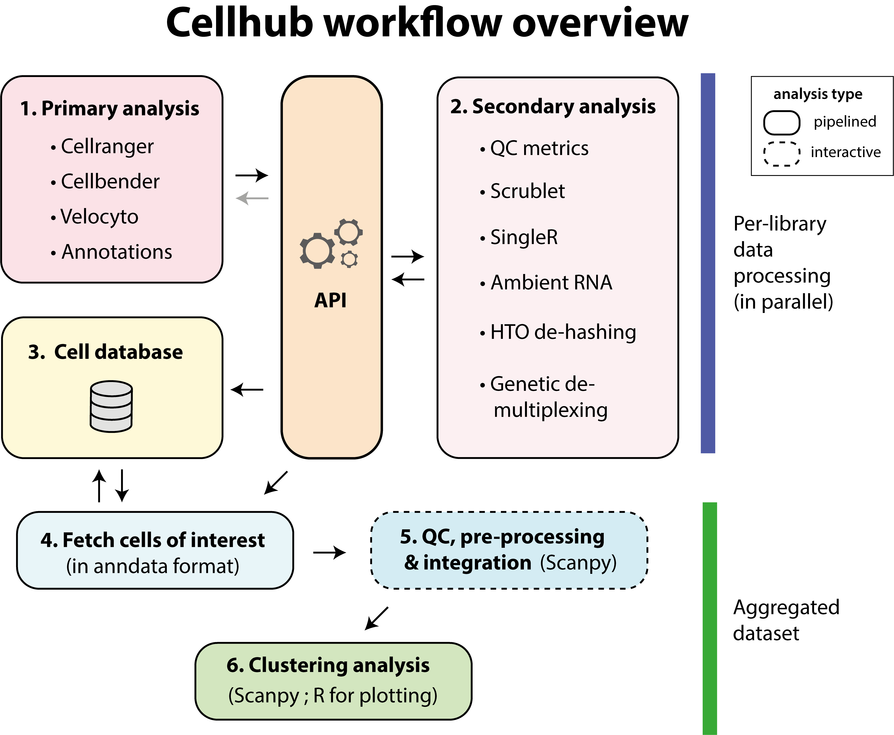

Workflow Overview
Introduction
Cellhub is designed to efficiently parallelise the processing of large 10x datasets. Data for each of the capture chip channel sequencing libraries in the experiment is initially processed in parallel (primary and secondary analysis phases). Summary results are then stored in an SQLite database. Cell identifiers are joined with sample metadata, qc statistics and other per-cell information in a virtual table in the database. The data for a set of cells of interest (specified by an SQL query) is extracted into anndata format for downstream analysis. By design, cell QC, pre-processing and integration are left for the user to perform manually. The clustering pipeline can then be used to perform cell clustering (for a selection of resolutions), identify marker genes, perform pathway analysis and export pdf reports and a cellxgene object for inspection. Interoperability between the pipelines is enabled by a structured API.

As shown in the image above, the workflow can be divided into six parts.
1. Primary analysis
These pipelines process the raw data to generate count matrices or fetch annotations from externals sources. They register their outputs on the API.
The workflow typically begins with pipeline_cellranger_multi.py. Input 10X channel library identifiers “library_id” and their associated FASTQ files are specified in the pipeline_cellranger_multi.yml configuration file. The reads from the different libraries will be mapped in parallel.
CellBender can be run to correct ambient RNA with pipeline_cellbender.py. Typically, this pipeline will be run in a separate directory so that the downstream results can be compared with those from the uncorrected cellranger run.
Velocyto can be run to compute spliced and unspliced counts for RNA-velocity analysis with pipeline_velocyto.py.
Cell identification can be performed with pipeline_emptydrops.py. Currently results are not available for use downstream.
2. Secondary analysis
These pipelines start from the outputs of the primary analysis pipelines on the API.
Per-cell QC statistics are computed in parallel for each channel library using pipeline_cell_qc.py. The pipeline computes various statistics including standard metrics such as percentage of mitochondrial reads, numbers of UMIs and numbers of genes per cell. In addition it can compute scores for custom genesets. The pipeline also runs the Scrublet algorithm for doublet prediction.
Per-cell celltype predictions are computed in parallel for each channel library using pipeline_singleR.py
The per-library patterns of ambient RNA can be inspected using pipeline_ambient_rna.py.
Cells multiplexed with hash-tags can be de-hashed using pipeline_dehash.py
If samples included the ADT modality, pipeline_adt_norm.py normalizes the antibody counts for the high-quality fetched cells in the previous step. Normalized ADT can be then used for downstream integration. The pipeline implements 3 normalization methodologies: DSB, median-based, and CLR. The user can specify the feature space.
3. Loading results into the cell database
The library and sample metadata, per cell statistics (and demultiplex assignments) etc, are loaded into an sqlite database using pipeline_celldb.py. The pipeline creates a view called “final” which contains the qc and metadata needed for cell selection and downstream analysis.
Note
The user is required to supply a tab-separated sample metadata file (e.g. “samples.tsv”) via a path in the pipeline_celldb.yml configuration file. It should have columns for library_id, sample_id as well as any other relevant experimental metadata such as condition, genotype, age, replicate, sex etc.
4. Fetching of cells for downstream analysis
Cells are fetched using pipeline_fetch_cells.py. The user specifies the cells that they wish to retrieve from the “final” table (see step 4) via an SQL statement in the pipeline_fetch_cells.yml configuration file. The pipeline will extract the cells and metadata from the original matrices and combine them into an anndata object for downstream analysis.
It is recommended to fetch cells into a new directory. By design fetching of a single dataset per-directory is supported.
The pipeline supports fetching of Velocyto results for RNA-velocity analysis.
Note
The retrieved metadata will include a “sample_id” column. From this point onwards it may be natural to think of the “sample_id” as the unit of interest. The “library_ids” remain in the metadata along with all the qc statistics to facilitate downstream investigation of batch effects and cell quality.
5. Assessment of cell quality, pre-processing and integration
These steps are performed manually.
Per cell QC statistics and singleR scores can be easily retrieved from the celldb or anndata object for inspection with R or python.
It is recommended to perform pre-processing using Scanpy. Strategies for HVG selection and modelling of covariates should be considered by the data analyst on a case by case basis.
Integration is normally performed in python with e.g. scVI, harmonpy or BBKNN. Different integration algorithms are needed for different contexts.
6. Clustering analysis
Clustering analysis is performed with pipeline_cluster.py. The pipeline starts from an anndata provided by the user in the format described in the pipeline documentation: pipeline_cluster.